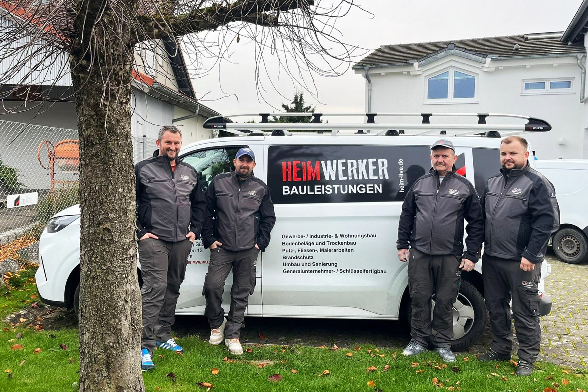

- Start
- Karriere
Werden Sie HEIMWERKER.
Bauen ist vieles, nur nicht langweilig. Jedes Projekt bringt neue Herausforderungen, und wir suchen ständig Menschen, die sie mit uns angehen.

Offene Stellen
In Göppingen und in unserer Niederlassung Süd in Baindt. Ein Lebenslauf genügt für den Anfang.
- Technik & BauleitungBauleiter (m/w/d) Tief- und StraßenbauGöppingenVoll- oder Teilzeit
- Technik & BauleitungBauleiter (m/w/d) SchlüsselfertigbauGöppingenVoll- oder Teilzeit
- Technik & BauleitungBauleiter (m/w/d) Hochbau, Ingenieurbau & SanierungGöppingenVoll- oder Teilzeit
- Technik & BauleitungProjektleiter (m/w/d) SchlüsselfertigbauGöppingenVoll- oder Teilzeit
- Technik & BauleitungKalkulator (m/w/d) BauGöppingenVollzeit
- Technik & BauleitungAbrechner (m/w/d) BauGöppingenVollzeit
- Technik & BauleitungBautechniker / Bauzeichner (m/w/d) CAD & ArbeitsvorbereitungBaindt (Ravensburg)Vollzeit
- Baustelle & GewerbePolier / Vorarbeiter (m/w/d) Tief- und StraßenbauGöppingenVollzeit
- Baustelle & GewerbePolier / Vorarbeiter (m/w/d) VerkehrslärmschutzGöppingen, bundesweite EinsätzeVollzeit
- Baustelle & GewerbePolier / Vorarbeiter (m/w/d) BetonsanierungGöppingenVollzeit
- Baustelle & GewerbeBaugeräteführer (m/w/d) Tief- und StraßenbauGöppingenVollzeit
- Baustelle & GewerbeBerufskraftfahrer (m/w/d) C1/CEGöppingenVoll- oder Teilzeit
- Baustelle & GewerbeAnlagenmechaniker SHK (m/w/d) Heizung & SanitärBaindt (Ravensburg)Vollzeit
- Finanzen, Einkauf & VerwaltungSachbearbeiter (m/w/d) Lohn- und DebitorenbuchhaltungGöppingenVollzeit
- Finanzen, Einkauf & VerwaltungTechnischer Einkäufer (m/w/d) BauGöppingenVollzeit
- Ausbildung & StudiumAusbildung Straßenbauer oder Baugeräteführer (m/w/d)GöppingenAusbildung
- Ausbildung & StudiumDuales Studium Bauingenieurwesen (m/w/d)GöppingenDuales Studium
- Ausbildung & StudiumPraktikum oder Abschlussarbeit (m/w/d) Bauwirtschaft & ProzesseGöppingenPraktikum / Abschlussarbeit
Keine passende Stelle gefunden. Bewerben Sie sich gerne initiativ.
Das WIR gewinnt.
Nur mit Wertschätzung ist Begeisterung möglich. Das bieten wir allen HEIMWERKERN.
Gesundheit
- Firmenfitness INSHAPE
- Gesundheitsbonus
- Ergonomische Arbeitsplätze
- Getränke und frisches Obst
Entwicklung
- HEIM Akademie
- Einarbeitung mit persönlichem Mentor
- Interne und externe Schulungen
- Ausbildungsmöglichkeiten
Ausstattung
- Top-Ausstattung und hochwertige Geräte
- Arbeitskleidung
- E-Bike-Leasing
- HEIM-Office
Miteinander & Vorsorge
- Betriebliche Altersvorsorge
- Prämien und Corporate Benefits
- Mitarbeiter-Events und Tischkicker
- Ausgezeichneter Familienbetrieb
Auf ein Wort.
Unsere Auszubildenden über ihren Alltag bei HEIM.
„Mich fasziniert der Bau an sich. Am Ende des Tages sieht man seine Arbeit direkt vor Augen. Gelegentlich darf ich mit auf die Baustelle und sehe dann live, was ich im Büro organisiert oder bestellt habe.“Lisa Weber
Auszubildende Kauffrau für Büromanagement
„In dieser Ausbildung wird es nie langweilig, weil man die verschiedenen Abteilungen durchläuft. Besonders positiv überrascht hat mich der Umgang unter den Kollegen.“Ellen Bittlingmaier
Auszubildende Kauffrau für Büromanagement
In vier Schritten zu HEIM.
Unkompliziert und persönlich.
Bewerben
Über das Formular der Stelle oder per E-Mail an info@heim-hus.de. Ein Anschreiben ist nicht nötig.
Rückmeldung
Sie erhalten eine Eingangsbestätigung. Die zuständige Führungskraft sieht sich Ihre Unterlagen persönlich an.
Kennenlernen
Im Gespräch in Göppingen oder Baindt, gerne auch direkt auf der Baustelle.
Starten
Ihr Mentor begleitet Sie durch die Einarbeitung und die ersten Projekte.
Gut zu wissen.
Brauche ich ein Anschreiben?
Nein. Ein aktueller Lebenslauf genügt uns für den ersten Schritt. Zeugnisse können Sie gerne nachreichen.
Kann ich mich initiativ bewerben?
Ja. Wir suchen ständig neue HEIMWERKER. Schreiben Sie uns kurz, was Sie mitbringen und in welchem Bereich Sie sich sehen.
Sind Quereinsteiger willkommen?
Auf der Baustelle sehr. Wer zuverlässig ist und anpacken möchte, wird bei uns eingearbeitet und kann sich über die HEIM Akademie weiterqualifizieren.
Wo sind die Baustellen?
Überwiegend in der Region Stuttgart, im Filstal, in Oberschwaben und im Allgäu. Im Lärmschutz sind wir bundesweit tätig.
Wie geht es nach meiner Bewerbung weiter?
Sie erhalten eine Eingangsbestätigung. Danach meldet sich die zuständige Führungskraft für ein erstes Gespräch, telefonisch oder persönlich bei uns in Göppingen oder Baindt.
Nicht die passende Stelle dabei?
Erzählen Sie uns, was Sie können und was Sie suchen. Wir melden uns, sobald sich eine passende Aufgabe ergibt.